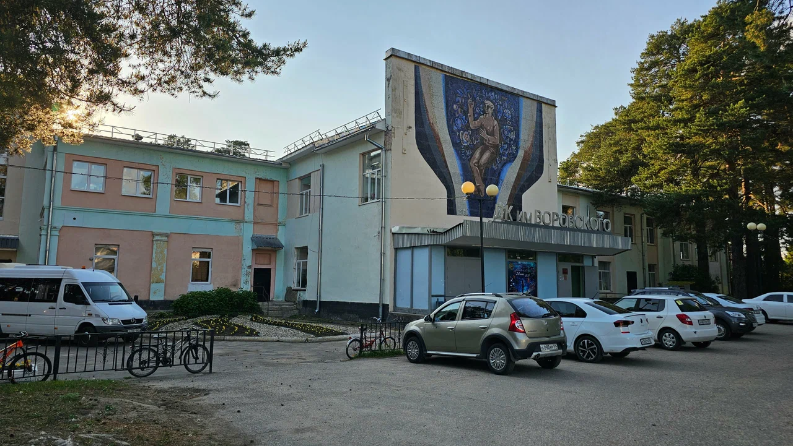
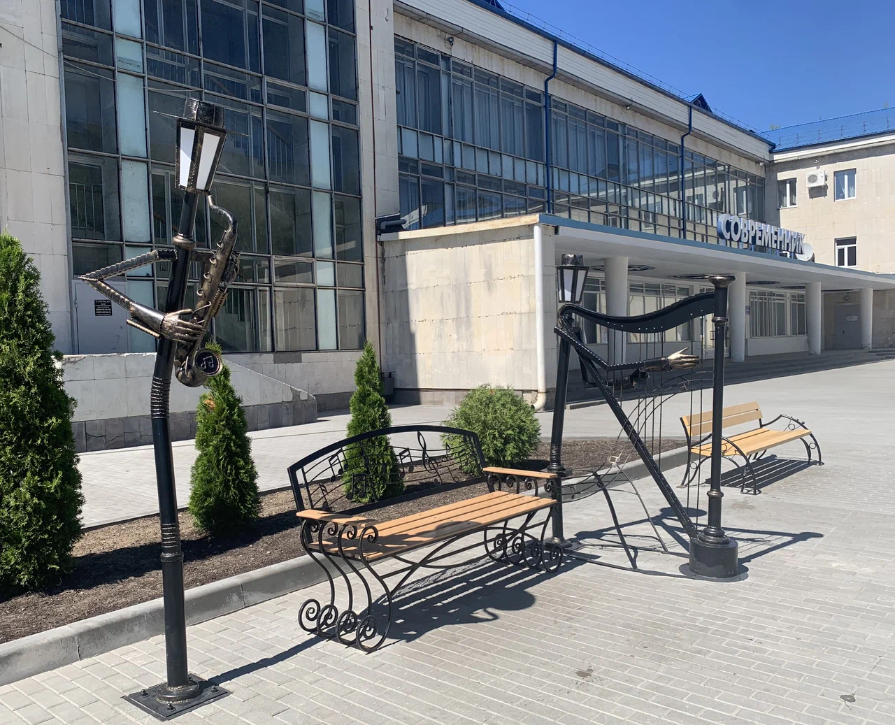
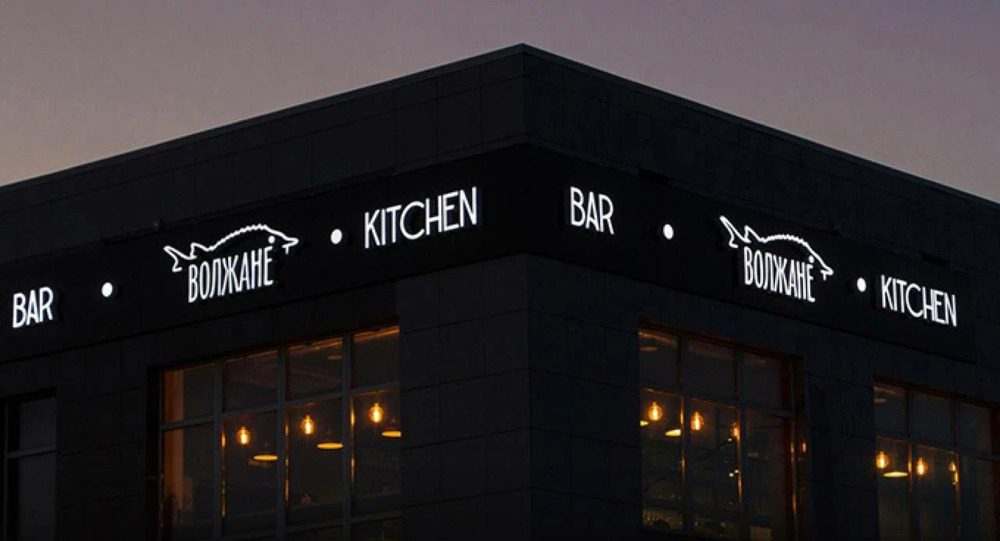
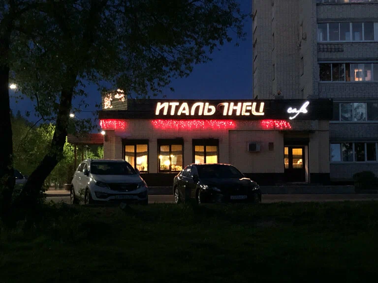
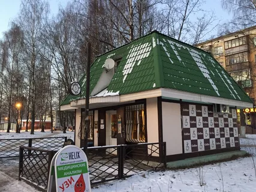

Заборье, Глинники и селищ характеризуют культуру населения края в древнерусское время. Орудия труда, бытовые вещи, украшения из железа, бронзы и стекла, кости позволяют не только рассказать о занятиях населения, реконструировать мужской и женский костюмы, но и частично восстановить элементы духовной жизни, прежде всего погребальный обряд.
Подробнее8 сентября 1923 года заводу присваивается имя М. И. Калинина. Фабрика стала именоваться «Тверская фарфорофаянсовая фабрика имени М. И. Калинина в Кузнецове». В 1929 году село Кузнецово переименовывают в Конаково в честь Порфирия Петровича Конакова. После 1937 года фабрика называлась «Конаковский фаянсовый завод имени М. Калинина».
Подробнее
Cтарейший в Раменском городском округе, построен в 1929 году. Назван в честь публициста, литературного критика, одного из первых советских дипломатов Вацлава Вацлавовича Воровского.
Подробнее

В Дворце культуры «Современник» проводятся различные мероприятия: концерты, спектакли, выставки, работают кружки и секции для детей и взрослых. Также в здании есть кинотеатр с двумя залами.
Подробнее


